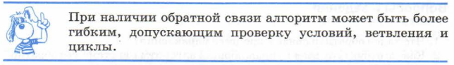

Если внимательно обдумать рассмотренные в предыдущем параграфе примеры, то можно прийти к выводу, что строго в соответствии со схемой на рис. 1.1 работает только система «светофор — автомобили». Светофор, «не глядя», управляет движением машин, не обращая внимания на обстановку на перекрестке. Вот алгоритм работы светофора: КРАСНЫЙ-ЗЕЛЕНЫЙ ЖЕЛТЫЙ-КРАСНЫЙ-ЗЕЛЕНЫЙ-ЖЕЛТЫЙ-КРАСНЫЙ ит. д. Такой алгоритм называется линейным или последовательным.
Совсем иначе протекает процесс управления телевизором или собакой. Прежде чем отдать очередную команду, человек смотрит на состояние объекта управления, на результат выполнения предыдущей команды. Если он не нашел нужную передачу на данном канале, то он переключит телевизор на следующий канал; если собака не выполнила команду «Лежать», хозяин повторит эту команду. Из этих примеров можно сделать вывод, что управление происходит эффективнее, если управляющий не только отдает команды, т. е. работает прямая связь, но и принимает информацию от объекта управления о его состоянии. Этот процесс называется обратной связью.
Вот как можно записать алгоритм поиска нужной передачи по телевизору: ВКЛЮЧИТЬ ТЕЛЕВИЗОР НА 1-М КАНАЛЕ ПОКА НЕ БУДЕТ НАЙДЕНА ИСКОМАЯ ПЕРЕДАЧА, ПОВТОРЯТЬ: ПЕРЕКЛЮЧИТЬ ТЕЛЕВИЗОР НА СЛЕДУЮЩИЙ КАНАЛ
В этом алгоритме содержится указание на повторение одних и тех же действий (переключить канал) по некоторому условию (пока не найдем передачу). Такой алгоритм называется циклическим.
Если вместо светофора на перекрестке дорог работает милиционер-регулировщик, то управление движением станет более рациональным. Регулировщик следит за скоплением машин на пересекающихся дорогах и дает «зеленую улицу» в том направлении, в котором в данный момент это нужнее. Нередко из-за «безмозглого» управления светофора на дорогах возникают «пробки». И тут на помощь может прийти регулировщик.
Назовем пересекающиеся дороги Дорога-1 и Дорога-2. Логика управления движением описывается следующим алгоритмом: ЕСЛИ НА ДОРОГЕ-1 СКОПИЛОСЬ БОЛЬШЕ МАШИНТО ОТКРЫТЬ ДВИЖЕНИЕ ПО ДОРОГЕ-1 ИНАЧЕ ОТКРЫТЬ ДВИЖЕНИЕ ПО ДОРОГЕ-2
Здесь по определенному условию происходит выбор одного из двух действий. Такой алгоритм называется ветвящимся. Проверка выполнения условия и в первом, и во втором примере стала возможна благодаря обратной связи: телезритель наблюдает за состоянием телевизора, милиционер наблюдает за состоянием движения на дорогах.
Итак, в варианте управления без обратной связи алгоритм может представлять собой только однозначную (линейную) последовательность команд. При наличии обратной связи и ‹интеллектуального» управляющего объекта алгоритмы управления могут иметь сложную структуру, содержащую альтернативные команды (ветвления) и повторяющиеся команды (циклы).

Принцип управления с обратной связью и есть основной закон, открытый наукой кибернетикой. Он действует в системах самой разной природы: технических, биологических, социальных.
Системы, в которых роль управляющего объекта поручается компьютеру, называются автоматическими системами с программным управлением.
Программное управление широко используется в технических системах: автопилот в самолете, автоматическая линия на заводе, ускоритель элементарных частиц в физической лаборатории, атомный реактор на электростанции и пр.
Для функционирования такой системы, во-первых, между компьютером и объектом управления должна быть обеспечена прямая и обратная связь, во-вторых, в память компьютера должна быть заложена программа управления (алгоритм, записанный на языке программирования). Поэтому такой способ управления называют программным управлением.
Управляющая информация передается по линии прямой связи в виде команд управления; по линии обратной связи передается информация о состоянии объекта управления
Без учета обратной связи алгоритм управления может быть только линейным, при наличии обратной связи алгоритм может иметь сложную структуру, содержащую ветвления и циклы.
Системы, в которых роль управляющего объекта выполняет компьютер, называются автоматическими системами с программным управлением.